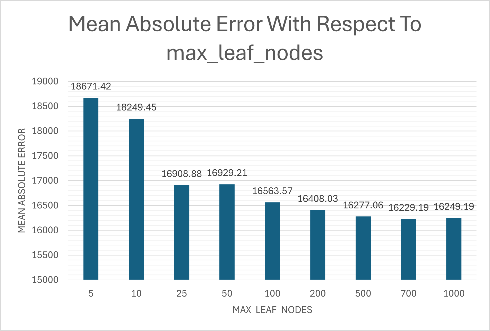
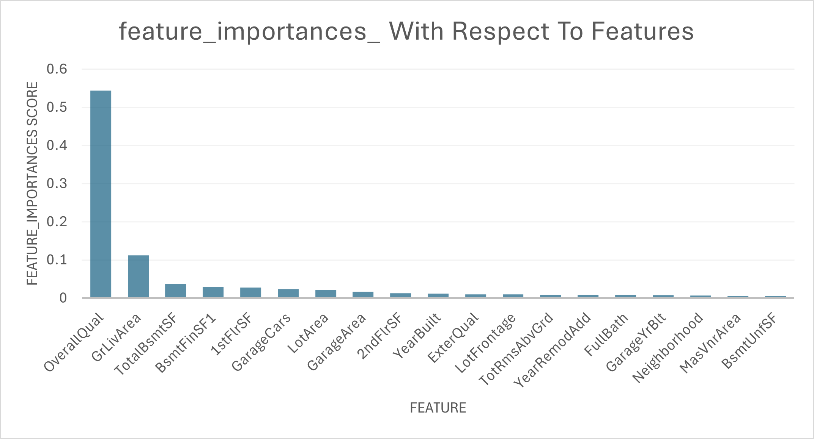

You can read the code for this project on my Github.
Random Forest Regression - Hyperparameters and Feature Selection
It was earlier last month when I decided to get a head-start on learning how to build machine learning models and manipulate datasets using libraries like pandas and numpy. Kaggle, the excellent dataset resource, it turns out, also provides in-depth courses and challenges to stimulate the exact kinds of things I wanted to get involved in. Their short “Intro to Machine Learning” course was an excellent primer for building a simple model leveraging the SciKit sklearn Python libraries.
Completing this course brought me to a page where I was able to submit my own model for an associated competition for predicting housing prices. This was an excellent opportunity to apply what I had just learned and to prove my problem-solving and creative-thinking skills.
After completing this project, I became very familiar with the train_test_split method of building machine learning models and the process of training -> fitting, training -> fitting. I learned how looping a training process with incremental changes to the training model will yield optimal results - things like proper feature selection and hyperparameter tuning.
I encountered a few problems throughout this project:
- Most of the features from the dataset were categorical, non-integer data. How can a random forest make sense of textual data?
- How could I select hyperparameters more effectively - less manually?
- How could I select features more effectively - less manually?
- How did I know that a random forest regressor was ideal for this dataset?
Converting Categorical Data to Numerical Representations
My first problem was quite trivial. I wrote a function to loop through ‘object’ dtypes in a given pandas dataframe and used sklearn.preprocessing’s LabelEncoder to fit_transform() the selected column, effectively creating numerical representations of comparable values.
def convert_categorical_to_integer_labels(dataframe):
for col in dataframe.select_dtypes(include='object').columns:
# ignore non-feature
if col == 'SalePrice':
continue
# remove missing data from selected dataframe
dataframe[col] = dataframe[col].fillna('Missing')
# apply fit_transform
dataframe[col] = le.fit_transform(dataframe[col])
return dataframe
Redefining my main dataframe, train_data as itself ran through this function now yields a fully-usable dataset.
Tuning Hyperparameters and Selecting Features
Developing this small model gave me insight into how decision trees work on a granular level, like how too many leaf nodes in a decision tree or random forest can lead to poor model performance. As the model is built and becomes too large, it may try to find similarities between features that don’t exist. This is why it’s imperative to guide the model in the right direction through the process of tuning.
Tuning hyperparameters like max_leaf_nodes is useful for creating a more accurate model, but it’s far more effective to automate the process. I simply defined a list of some integers from 0-500 candidate_leaf_nodes = [5,10,25,50,100,200,500,700,1000] and ran it through a function that I also used to iterate through feature selection:
def train_model_return_error(X, y, max_leaf_nodes):
X_train, X_val, y_train, y_val = train_test_split(X, y, random_state=1)
model = RandomForestRegressor(max_leaf_nodes, random_state=1)
model.fit(X_train, y_train)
y_pred = model.predict(X_val)
mae = mean_absolute_error(y_val, y_pred)
return mae
…
for leaf in candidate_leaf_nodes:
mae = train_model_return_error(X, y, leaf)
candidate_leaf_nodes_mae_index.append([leaf, mae])
A list pairing each candidate with its MAE allowed me to select the ideal_leaf_nodes with an anonymous function:
ideal_leaf_nodes = min(candidate_leaf_nodes_mae_index, key = lambda x: x[1])[0]
When we view the results from candidate_leaf_nodes_mae_index, we can clearly see diminishing returns as max_leaf_nodes increases, and even inconsistent negative growth as the model reaches a count of 1000.

I initially planned to use a sliding window approach, but discovered Random Forest’s built-in importance scores were more principled and computationally efficient.
importances = model.feature_importances_

Top 20 features by importance (80 total were selected). The steep dropoff shows how concentrated predictive power is in just a few features.This project is the first of many in my exploration of machine learning models and their optimization. Exploring different approaches to feature selection, from manual sliding windows to sklearn’s built-in importance scores, taught me the value of leveraging well-tested libraries. I also learned about the power of continuous model fitting and doing so in a results-oriented way, using mean absolute error as one method of measuring effectiveness.
Coming away from this project had me wondering if a random forest regressor is truly ideal for this project. What other ensemble learning methods could I try? In the future, I’ll examine other ensemble methods like kernel methods or gradient boosting and try to understand how each can be used for different kinds of applications.